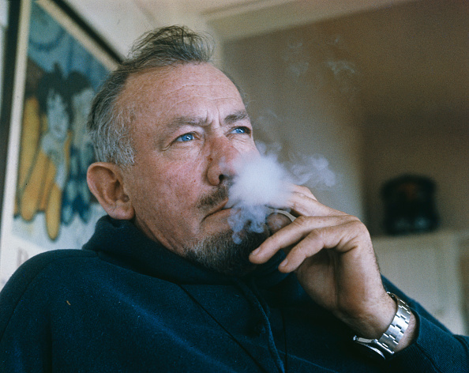
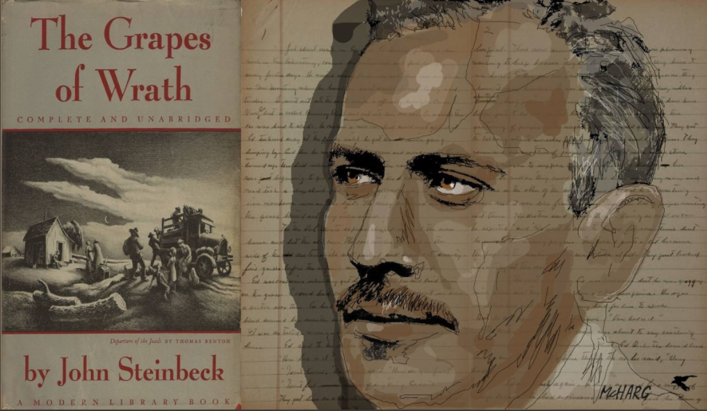
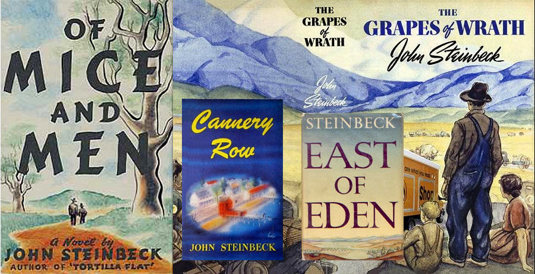
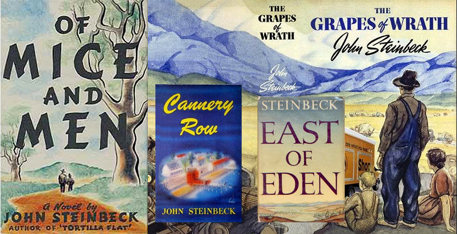

Джон Стайнбек (1902-1968) е роден в калифорнийския град Салинас, където живеят повечето от незабравимите му герои. Той е запознат от първа ръка с тежкия труд на американските фермери и работници от началото на миналия век, защото самият е бил такъв, преди да започне да се изявява като журналист. През 1935 г. публикува първия си роман - „Тортила Флет“, и незабавно се обвива с литературна слава. Той е автор на повече от 25 романа, а през 1962 г. става лауреат на Нобеловата награда за литература. При връчването на наградата Нобеловият комитет изтъква, че със „Зимата на нашето недоволство“ Стайнбек „се завръща с безпристрастния си инстинкт за истински американското на позициите на независим поборник за истината“. Баща му, Джон Стайнбек Старши, работи като чиновник в общинската администрация на Монтерей (окръг, Калифорния), а майка му, Олив Хамилтън е бивша учителка. Именно от нея Стайнбек наследява страстта си към книгите и литературата.
Баща му, Джон Стайнбек Старши, работи като чиновник в общинската администрация на Монтерей (окръг, Калифорния), а майка му, Олив Хамилтън е бивша учителка. Именно от нея Стайнбек наследява страстта си към книгите и литературата.
Първият му роман е „Златната чаша“ (1929) и е посветен на капера Хенри Морган. Фокусиран е основно върху убийството на Морган и плячкосването на Панама. С нея не успява да изкара дори 250 долара – сумата, която е получил в аванс от издателя.Първият голям успех на Стайнбек сред критиците е романът „Тортила Флет“ (1935). В него са представени приключенията на група безкласови и обикновено бездомни хора в Монтерей след Първата Световна Война, непосредствено преди сухия режим в САЩ.Стайнбек започва да пише поредица „Калифорнийски романи“ и произведения, посветени на пясъчните бурии, в които разказва за обикновените хора по време на Голямата депресия. Това са „В неравна борба“ (роман за стачката на 900 берачи на ябълки в Калифорния), „За мишките и хората“ (повест за двама души, които пътуват от ферма на ферма в търсене на временна работа и мечтаят един ден да си имат собствена ферма) и „Гроздовете на гнева“.„Гроздовете на гнева“ е следващият голям успех, за който Стайнбек е вдъхновен от своя статия.
През 1943 г. Стайнбек служи като военен кореспондент за Ню Йорк. По това време се сприятелява с Уил Ланг Младши, журналист на списания Тайм и Лайф. По време на войната Стайнбек придружава отрядите на Дъглас Феърбанкс Младши и Бич Джъмпърс, които извършвали операции срещу немските острови в Средиземноморието.
Стайнбек се завръща от войната с множество рани от шрапнели и психологическа травма. Лекува се, както винаги, чрез писане. Написва сценария за „Спасителен пояс“ (1944), режисиран от Алфред Хичкок и заедно със сценариста Джак Уагнър „Медал за Бени“ (1945) – история за пайсаносите от Тортила Флет, които отиват на война. По-късно моли името му да бъде премахнато от финалните надписи на „Спасителен пояс“, защото смята, че финалната версия съдържа расистки оттенък. През 1944 г., страдайки от носталгия по живота си от 30-те години в Пасифик Гроув и Монтерей, написва един от най-известните си романи – „Улица Консервна“. Той става толкова популярен, че Оушън Вю Авеню в Монтерей, за която се разказва в книгата, е прекръстена на улица Консервна през 1958 г.
През 1944 г., страдайки от носталгия по живота си от 30-те години в Пасифик Гроув и Монтерей, написва един от най-известните си романи – „Улица Консервна“. Той става толкова популярен, че Оушън Вю Авеню в Монтерей, за която се разказва в книгата, е прекръстена на улица Консервна през 1958 г.
 През 1962 г. Стайнбек печели Нобелова награда за литература за „реалистичното си и творческо писане, комбинирано с чувство за хумор и остри обществени възгледи“. В деня на съобщаването на победителя, когато преди церемонията е попитан дали заслужава наградата, Стайнбек отвръща „Честно, не.“ В речта си при награждаването Стайнбек говори за своето възхищение към някои автори. На първата пресконференция след награждаването е попитан за любимите си автори и техните творби и той отвръща: „Разказите на Хемингуей и почти всичко на Фокнър“.
През септември 1964 г. Стайнбек получава Медал на свободата на САЩ от Линдън Джонсън.През 1967 г. по искане на сп. Нюздей Стайнбек заминава за Виетнам, за да отразява войната. Това, което последва, е несигурен опит да открие някакъв смисъл в тази война, в която взимат участие и двамата му сина.
В посмъртно публикуваната му книга „Крал Артур и неговите доблестни рицари“ Стайнбек е обърнал гръб на съвременните теми и е възкресил за живот Артурианския свят с неговия древен кодекс на честта – един роман, започнат с голям ентусиазъм, но така и останал незавършен.
През 1962 г. Стайнбек печели Нобелова награда за литература за „реалистичното си и творческо писане, комбинирано с чувство за хумор и остри обществени възгледи“. В деня на съобщаването на победителя, когато преди церемонията е попитан дали заслужава наградата, Стайнбек отвръща „Честно, не.“ В речта си при награждаването Стайнбек говори за своето възхищение към някои автори. На първата пресконференция след награждаването е попитан за любимите си автори и техните творби и той отвръща: „Разказите на Хемингуей и почти всичко на Фокнър“.
През септември 1964 г. Стайнбек получава Медал на свободата на САЩ от Линдън Джонсън.През 1967 г. по искане на сп. Нюздей Стайнбек заминава за Виетнам, за да отразява войната. Това, което последва, е несигурен опит да открие някакъв смисъл в тази война, в която взимат участие и двамата му сина.
В посмъртно публикуваната му книга „Крал Артур и неговите доблестни рицари“ Стайнбек е обърнал гръб на съвременните теми и е възкресил за живот Артурианския свят с неговия древен кодекс на честта – един роман, започнат с голям ентусиазъм, но така и останал незавършен.
 В деня след смъртта на Стайнбек критикът Чарлс Пур пише в Ню Йорк Таимс: "Първата най-добра книга на Джон Стайнбек беше неговата последна най-добра книга. Но Господи, каква книга беше и е „Гроздовете на гнева“. Пур отбелязва и „проповедността“ в творбите на Стайнбек „сякаш едната половина от литературното му наследство идва от най-доброто от Марк Твен, а другата половина от най-лошото от Котън Меър“. Но се съгласява, че „Стайнбек нямал нужда от Нобеловата награда, а комисията имала нужда от него“.
Много от произведенията на Стайнбек се изучават в училищата във Великобритания. В същото време според Асоциацията на американските библиотекари Стайнбек е един от десетте автори, чийто произведения са забранявани най-често в периода 1991 – 2004, като „За мишките и хората“ е на шесто място в тази класация в САЩ.
В деня след смъртта на Стайнбек критикът Чарлс Пур пише в Ню Йорк Таимс: "Първата най-добра книга на Джон Стайнбек беше неговата последна най-добра книга. Но Господи, каква книга беше и е „Гроздовете на гнева“. Пур отбелязва и „проповедността“ в творбите на Стайнбек „сякаш едната половина от литературното му наследство идва от най-доброто от Марк Твен, а другата половина от най-лошото от Котън Меър“. Но се съгласява, че „Стайнбек нямал нужда от Нобеловата награда, а комисията имала нужда от него“.
Много от произведенията на Стайнбек се изучават в училищата във Великобритания. В същото време според Асоциацията на американските библиотекари Стайнбек е един от десетте автори, чийто произведения са забранявани най-често в периода 1991 – 2004, като „За мишките и хората“ е на шесто място в тази класация в САЩ.